Trustworthy beauty advice is hard to find.
Finding trustworthy advice about beauty products online is difficult and slow, especially when people want solutions that match their own skin or hair type. They also want to see how a product will look on them before they buy it.
The information out there is scattered across sites and full of contradictions. Brands promote their own products on their own platforms, and celebrity endorsements muddy things further. Getting unbiased, personal advice takes a lot of time and effort.
That leaves a gap in the market: there's no central place to get personalised guidance from experts like makeup artists, dermatologists and beauty influencers, and few ways to consult them directly.
One place for unbiased, personal advice.
I hypothesised that a central platform offering unbiased advice on beauty products, tailored to each person's skin and hair type, would help people make informed decisions more efficiently. A curated, personal approach should give them a more reliable way to evaluate products, and more confidence in what they buy.
The project followed the full design process, from research through definition and ideation to prototyping and two rounds of testing, with iteration between each step.
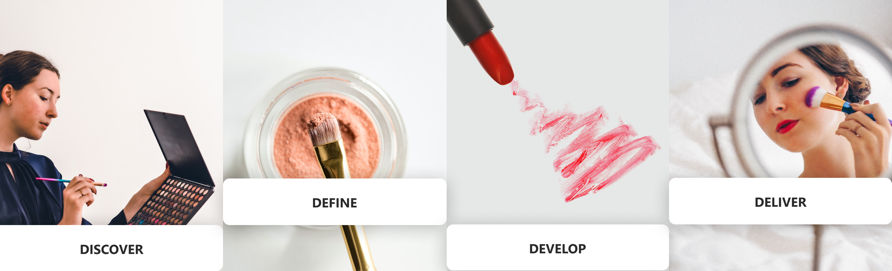
The main competitors were Sephora and Intro: Talk with experts. Sephora is the strongest rival: it has a large chat community that gives beauty advice, free consultations with beauty coaches on its website, and a try-on feature for its own brand's products, though that is only available in Singapore.
Competition
Two groups: Sephora and other makeup platforms selling online, and apps like Intro and Doctolib where people book consultations with experts.
Risks
Celebrities endorse Intro, and Sephora gives beauty advice for free. Virtual try-on, AI skin analysis, at-home devices and DNA-based skincare like Allél reduce the need for human experts.
Opportunities
Intro has beauty advisors but is expensive and Apple-only. Free advice on makeup sites covers only their own products, so it isn't seen as unbiased.
From online comments and the competitor research, I defined the target audience as people aged 18 to 45, mostly middle class. They want expert-approved products, value honesty over influencer ads, and are too busy to get advice in person. I interviewed 6 people aged 25–45, full-time employees or students, who matched that profile.
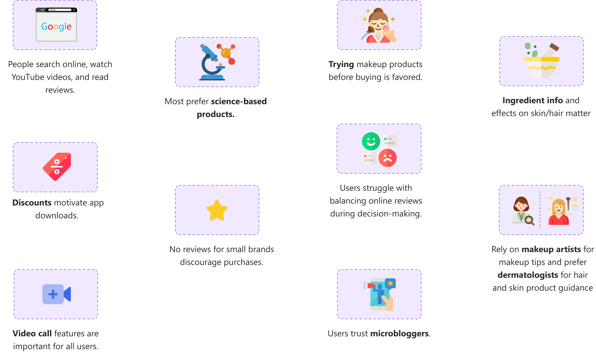
“Product reviews are often based on one person's characteristics and might not match with my skin or hair color.”
Two people, two different needs.
The interview results pointed to two distinct personas:
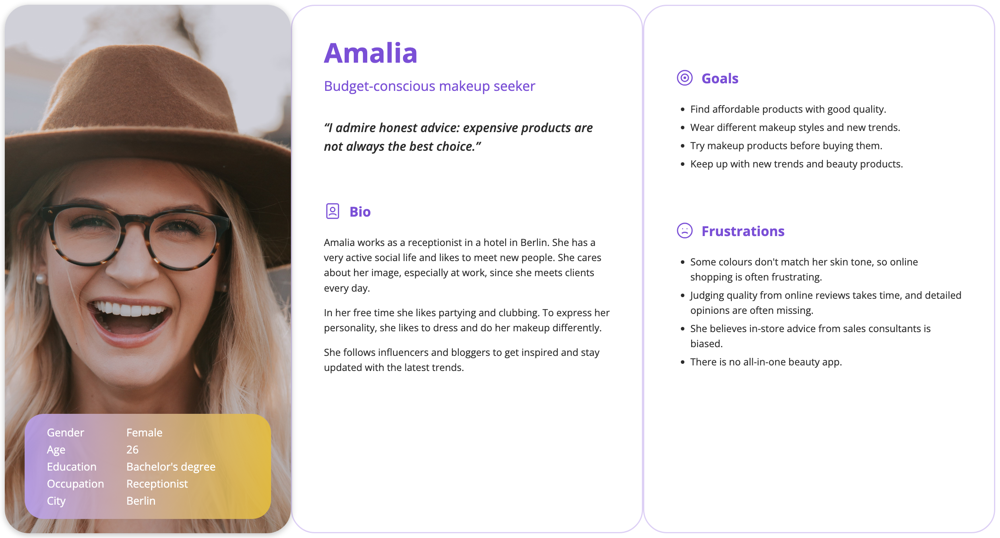
User journeys
I mapped a user journey to understand the users' perspective and behaviour: what shapes their decisions, how they feel at each step, and where they struggle, get frustrated or drop off. Pinpointing those moments showed me what to improve and what to keep.
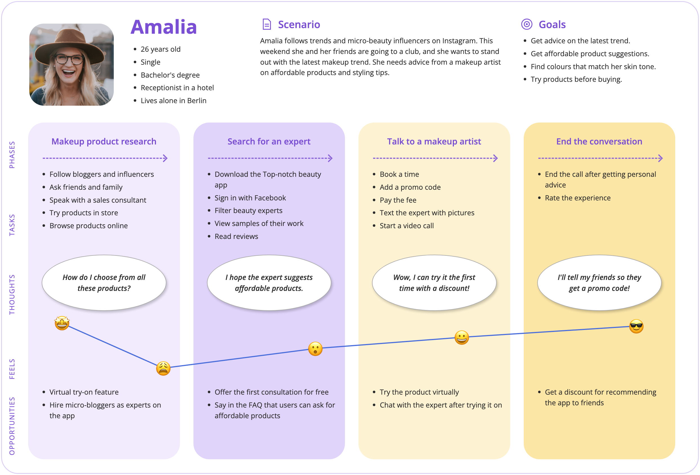
With Jessica and Amalia in mind, I mapped how each of them would use the app, step by step.
Jessica: talk to a dermatologist
Objective: Jessica wants advice on organic products from a dermatologist, so the products she adds to her routine won't harm her skin. Success: she can talk to a dermatologist and get personal advice.
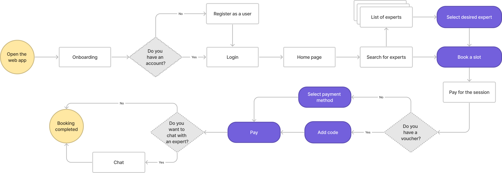
Amalia: try makeup on virtually
Objective: Amalia wants to try makeup before buying it, to make sure the colours match her skin. Success: she can try products virtually and save the ones she likes.
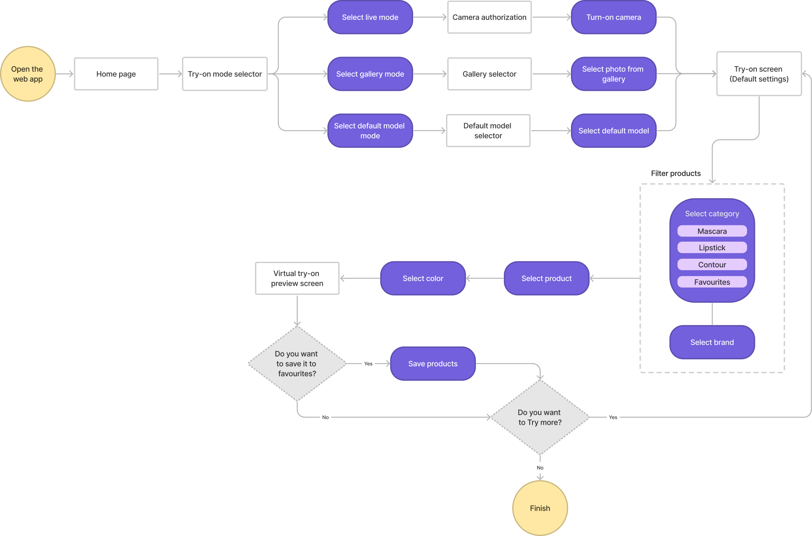
To build the sitemap, I ran an open card sort with five users and 20 terms. An open sort let people group the terms the way they think about them, so the structure follows their mental models rather than mine.
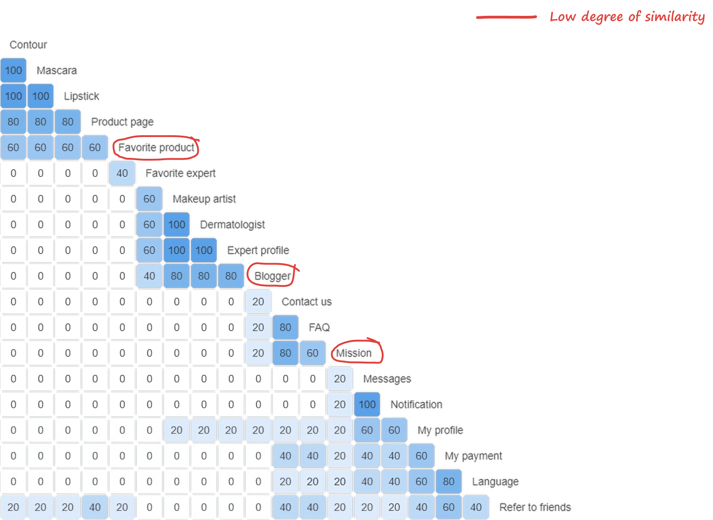
Clear groups emerged, like makeup products and experts, and they became the sections of the sitemap. A few cards, such as favourite product, blogger and mission, split opinions, so I placed them where they fit best.
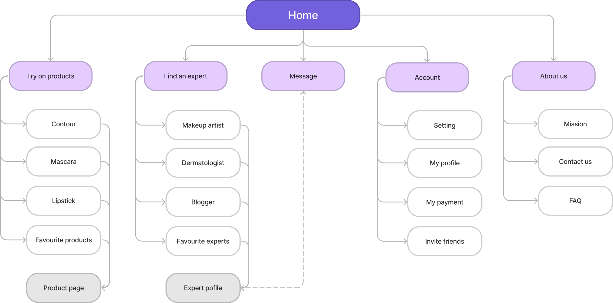
From paper to pixels.
I started by sketching on paper to explore many concepts quickly. Basic wireframes then kept the focus on the main features and how they work, which came out of the competitor analysis and user research. Following the sitemap and user flows, I set the layout first and only then added colour, images and buttons.
Home screen
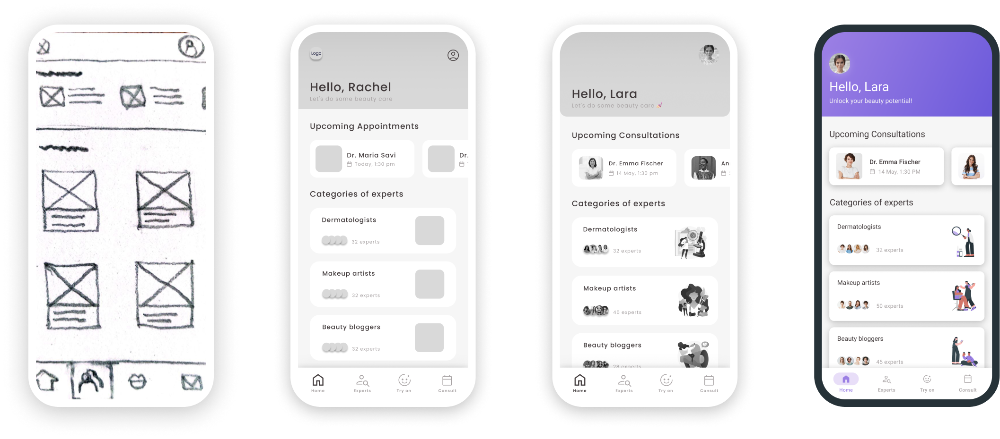
Expert screen
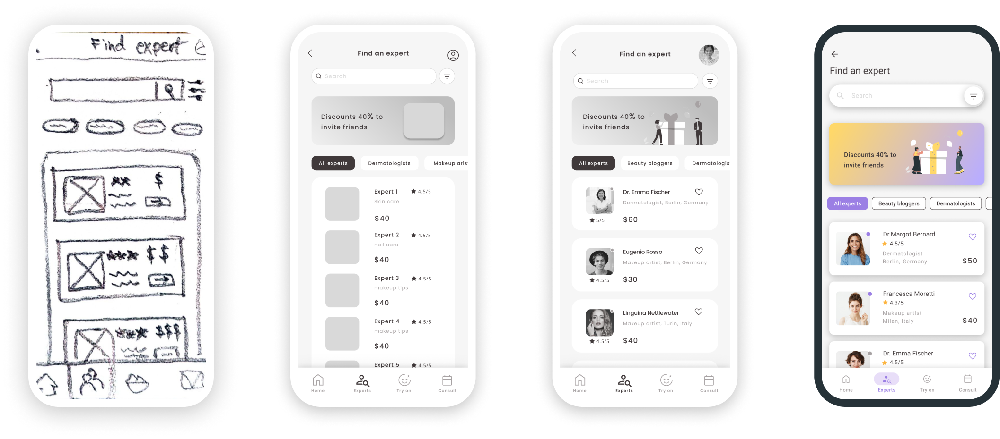
Try-on screen
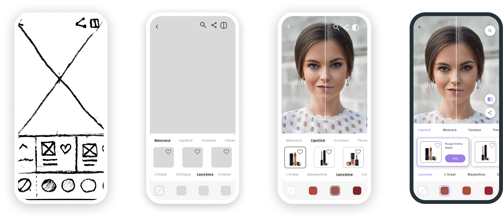
Tested twice, fixed what mattered.
I ran two rounds of usability tests. Both aimed to measure how easily first-time users learn the app, whether they understand its main functions, how quickly they complete the most common tasks, and how satisfied they are overall.
Mid-fidelity test
Moderated, in person and remote. 6 participants aged 25–45, all with online booking experience, 2 who had used consultation apps.
High-fidelity test
Unmoderated, remote. 5 participants aged 25–45, recruited through the CareerFoundry Slack channel.
I turned the interview notes into affinity maps to find patterns in observations, errors, and positive and negative quotes. These fed a rainbow spreadsheet, where I rated each issue on Jakob Nielsen's severity scale. That surfaced the biggest problems and told me which fixes to prioritise.
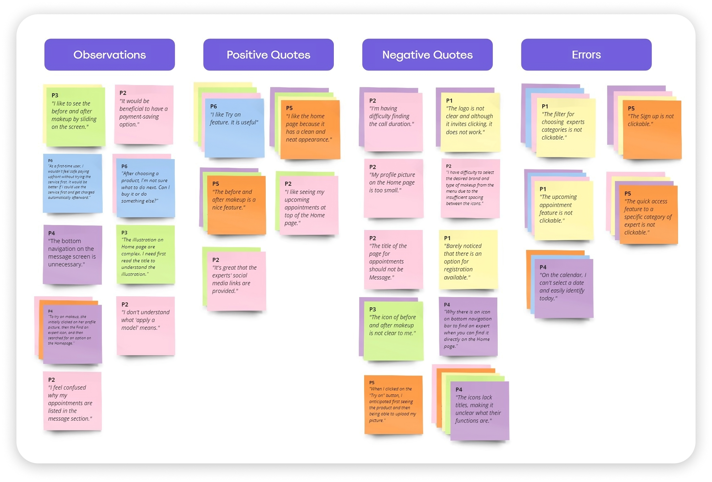
Mid-fi findings
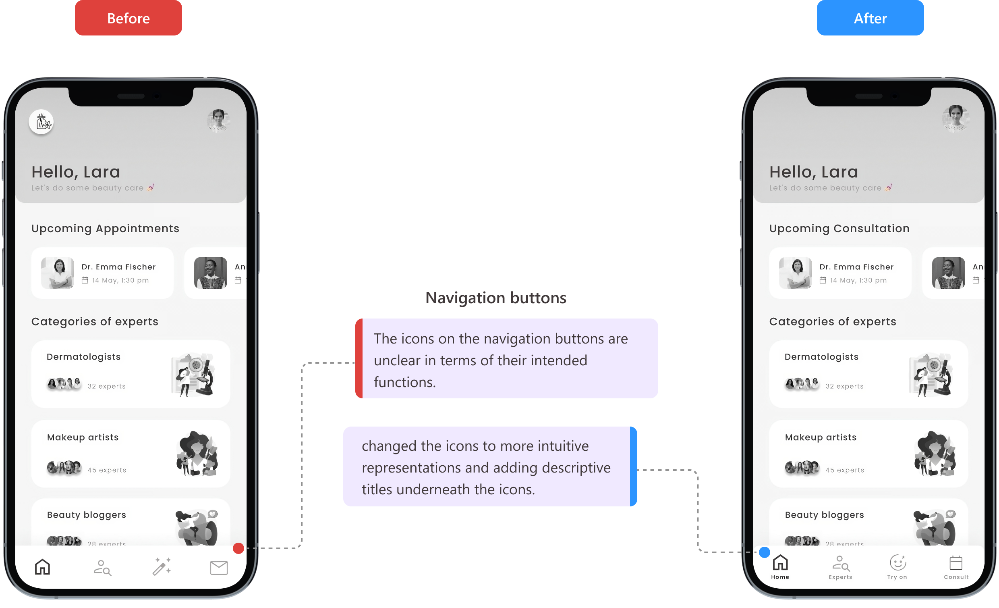
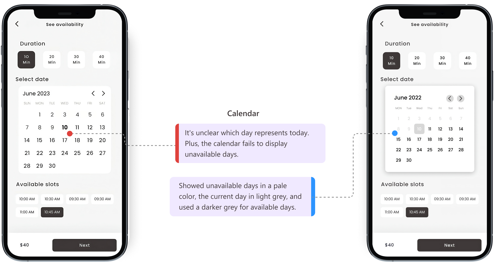
Hi-fi findings
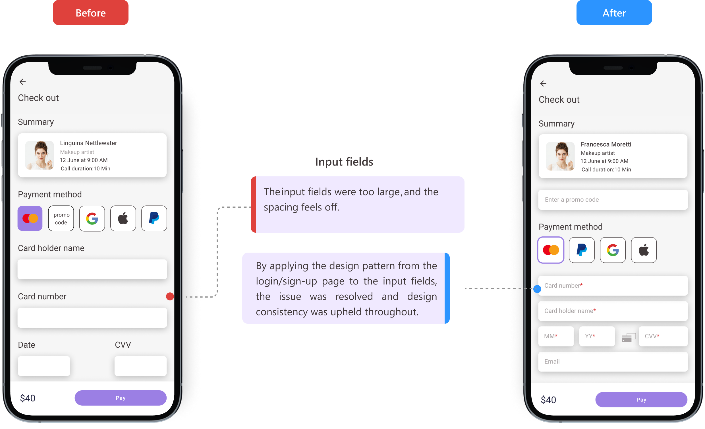
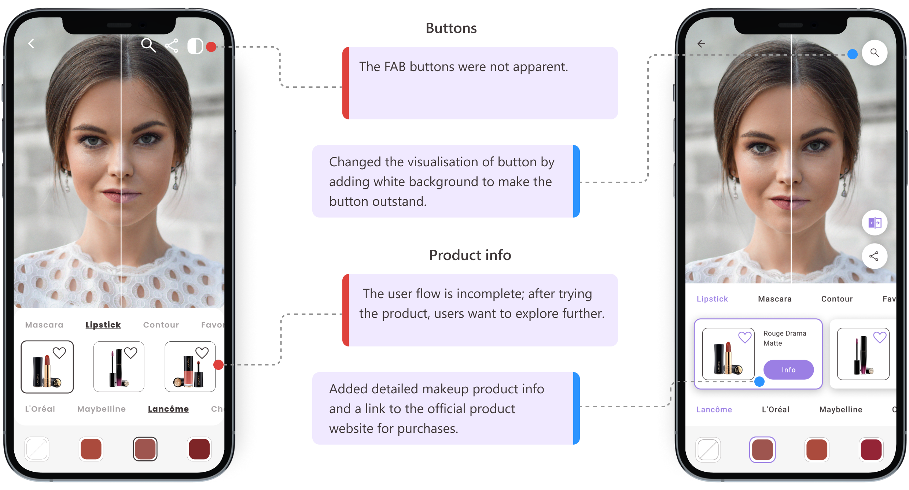
Style guide
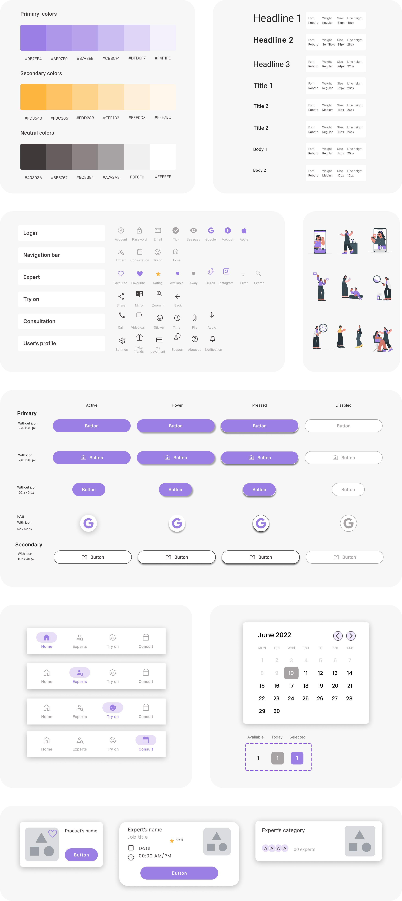
Final mockups
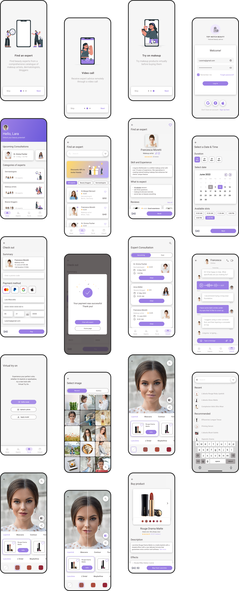
Future steps
Research with experts
Interview makeup artists and dermatologists to understand their needs and pain points, the other side of the marketplace.
In-app purchasing
A streamlined way to buy products inside the app, to raise engagement and revenue. Validate with an A/B test against the current external-link setup.
Save to calendar
Let users add booked consultations to Google or Apple Calendar. Measure saved appointments and satisfaction, and collect feedback through surveys.
Top-notch Beauty brings expert advice, virtual try-on and buying into one place, so people choose products that suit them, not the ad.
This was my first end-to-end project: research, personas, flows, card sorting, wireframes, two rounds of testing and a high-fidelity prototype. Each round of feedback changed the design, and the clearest next step is to hear from the experts themselves.